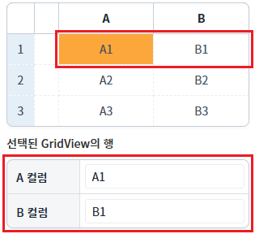
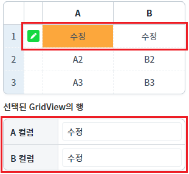

DataList의 'setBroadcast' 메소드를 사용하여 Broadcast 기능의 사용 여부를 설정한 예제입니다.
DataList의 Broadcast 기능은 DataList의 데이터가 변경 시, 연결된 컴포넌트에 데이터를 전파(반영)하는 기능입니다. 기본 설정 값은 true이며, 데이터 변경 시 DataList와 연결된 컴포넌트가 즉시 갱신됩니다. DataList의 'setBroadcast' 메소드를 사용하여 이 기능을 활성화 또는 비활성화할 수 있습니다.
DataList의 Broadcast 기능은 DataList의 데이터가 변경 시, 연결된 컴포넌트에 데이터를 전파(반영)하는 기능입니다. 기본 설정 값은 true이며, 데이터 변경 시 DataList와 연결된 컴포넌트가 즉시 갱신됩니다. DataList의 메소드 'setBroadcast'를 사용하여 이 기능을 활성화 또는 비활성화할 수 있습니다.
DataList의 메소드 'setBroadcast'를 사용하여 Broadcast 기능을 비활성화 또는 활성화하기
1
STEP 1: 초기 상태 확인하기
다음은 화면에 구성된 각 버튼의 기능 설명입니다.
DataList 초기화 : DataList의 상태를 초기 상태로 설정합니다.
데이터 수정 스크립트 실행하기 : 스크립트로 첫 번째 행의 'A' 컬럼과 'B' 컬럼의의 값을 '수정'으로 변경합니다.
Broadcast 상태 확인하기 : DataList의 Broadcast 기능의 활성화 여부를 반환합니다.
Broadcast 비활성화하기 : DataList의 Broadcast 기능을 비활성화합니다.
Broadcast 활성화하기 : DataList의 Broadcast 기능을 활성화합니다.
DataList는 GridView와 하단에 구성된 InputBox과 연결되어 있습니다. GtidView의 첫 번째 행의 'A' 컬럼이 선택된 상태입니다.
Image 1.브라우저(Chrome) 실행 예시

2
STEP 2: DataList의 Broadcast 기능의 활성화 여부를 확인합니다.
'Broadcast 상태 확인하기' 버튼을 클릭합니다.
영역 '로그 확인'에 출력된 로그를 확인합니다.
DataList의 Broadcast 기능의 활성화 여부를 반환합니다.
'dlt_exam'의 Broadcast 기능은 활성화되어 있습니다.
(브라우저의 개발자 도구 콘솔에도 로그가 출력되며, 반환된 객체를 확인할 수 있습니다.)Example 1.Log
[10:50:11] # 'dlt_exam'의 Broadcast 기능의 활성화 여부 : true [10:50:11] 연결된 컴포넌트가 즉시 갱신됩니다.
3
STEP 3: Broadcast 기능을 비활성화합니다.
'Broadcast 비활성화하기' 버튼을 클릭합니다.
DataList의 Broadcast 기능이 비활성화됩니다.영역 '로그 확인'에 로그가 출력됩니다. (브라우저의 개발자 도구 콘솔에도 로그가 출력됩니다.)
Example 2.Log
[10:50:38] # 'dlt_exam'의 Broadcast 기능을 비활성화합니다. [10:50:38] DataList와 연결된 컴포넌트의 데이터가 갱신되지 않습니다.
4
STEP 4: GridView의 데이터를 수정합니다.
'데이터 수정 스크립트 실행하기' 버튼을 클릭합니다.
아래의 스크립트가 실행됩니다.Example 3.Script
dlt_exam.setCellData(0, "col_a", "수정"); dlt_exam.setCellData(0, "col_b", "수정");
DataList의 데이터가 변경되었지만 화면에 구성된 컴포넌트의 데이터에는 변화가 없습니다.
Image 2.브라우저(Chrome) 실행 예시
5
STEP 5: Broadcast 기능을 활성화합니다.
'Broadcast 활성화하기' 버튼을 클릭합니다.
DataList의 Broadcast 기능이 활성화되어 화면에 구성된 컴포넌트의 데이터가 변경됩니다.첫 번째 행의 'A' 컬럼과 'B' 컬럼의 값이 모두 '수정'으로 변경됩니다.
Image 3.브라우저(Chrome) 실행 예시

영역 '로그 확인'에 로그가 출력됩니다. (브라우저의 개발자 도구 콘솔에도 로그가 출력됩니다.)
Example 4.Log
[11:13:40] # 'dlt_exam'의 Broadcast 기능을 활성화합니다. [11:13:40] DataList와 연결된 컴포넌트의 데이터가 갱신됩니다.
DataList의 'setBroadcast' 메소드를 사용하여 스크립트를 작성합니다.
Example 5.Script
// DataList 'dlt_exam'의 broadcast 기능을 비활성화합니다. dlt_exam.setBroadcast(false); // 'try/catch/finally' 구문을 작성한 이유는 로직 실행 중 오류가 발생할 경우를 'finally' 영역을 실행하기 위함입니다. try { // 데이터 조작 로직 구성 dlt_exam.setCellData(0, "col_a", "수정"); dlt_exam.setCellData(0, "col_b", "수정"); } catch (ex) { // 오류 발생 시 로직 구성 console.error(ex); } finally { // DataList 'dlt_exam'의 broadcast 기능을 활성화하고 연결된 컴포넌트들을 즉시 갱신합니다. dlt_exam.setBroadcast(true, true); }
setBroadcast